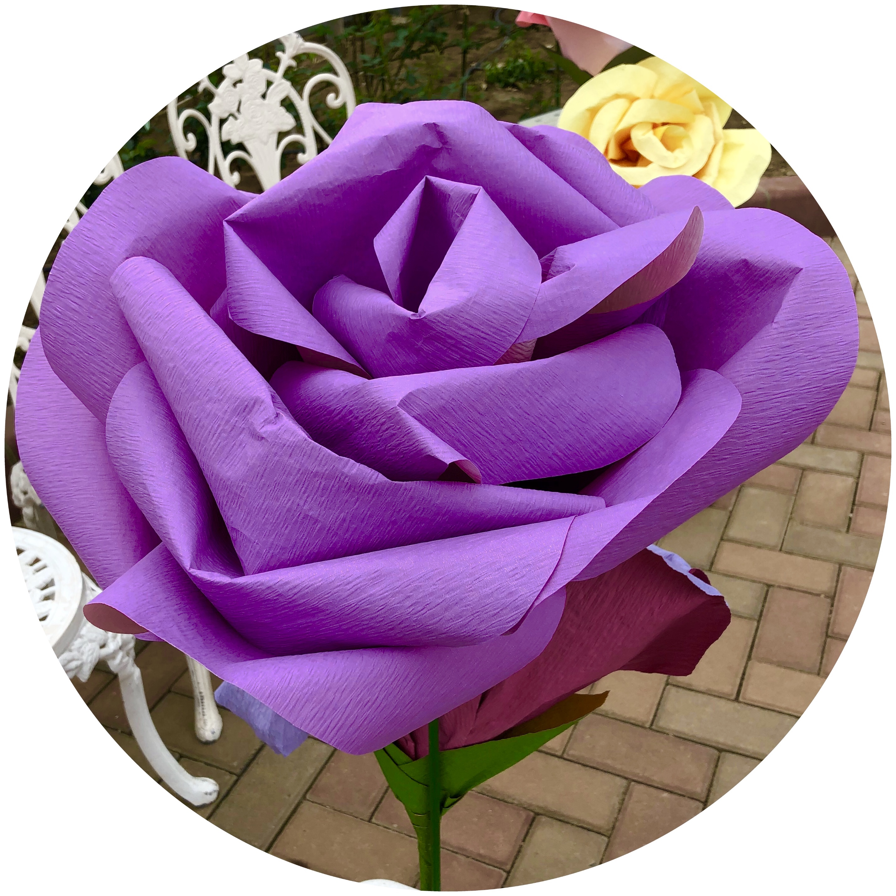

発見！こんな歴史があった島田市
島田髷ってなに？
突然ですが、文金高島田という髪型を知っていますか？
高島田というのは島田髷という髷の髷の一種であり、文金高島田はその高島田のなかで一番上品な形とされています。
また、現在でも和装の花嫁が結う髪型として知られています。
ではそんな文金高島田と島田市にはどんな繋がりがあるのでしょうか？
一説ではありますが島田出身の遊女、虎御前という方が考案して結ったことから島田髷と名付けられたと言われています。
また昭和8年には虎御前感謝祭が行われ、現在も島田髷まつりという名前で続いています。
髷祭りというのは、9月の第３日曜日に日本髪や島田髷を結いお揃いの浴衣を着た女性たちが踊りながら鵜田寺まで歩く祭りで、島田市では有名なお祭りとなっているものです。[2]
興味のある方はぜひ一度行ってみてはいかがでしょうか。


参考文献
- [2]島田市博物館の島田髷コーナーの展示